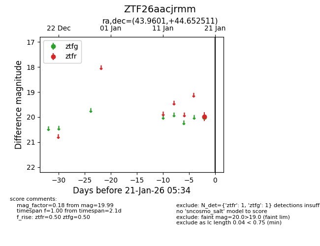
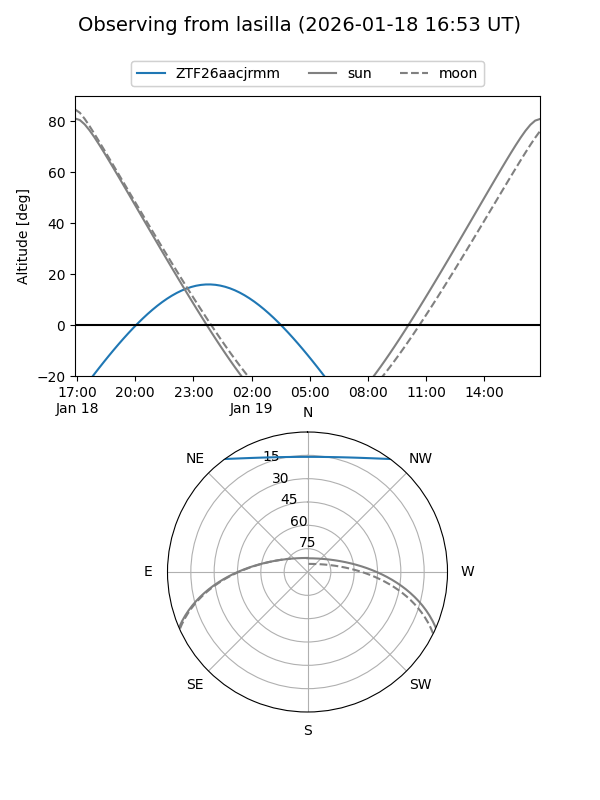
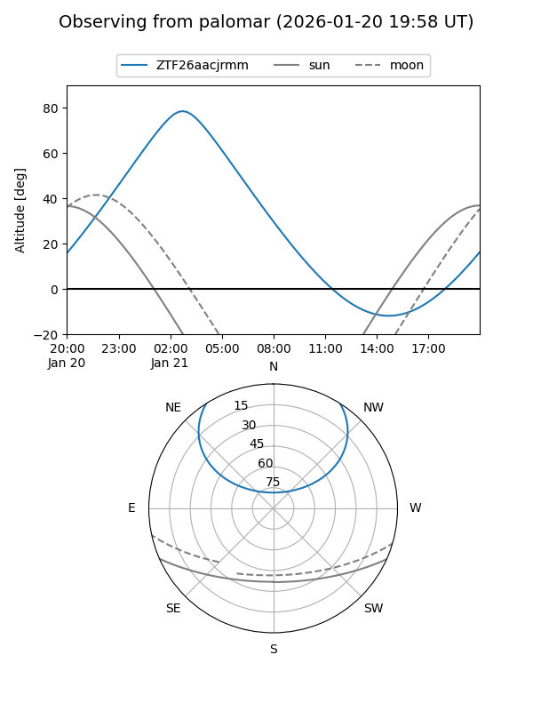

ZTF26aacjrmm
Target ZTF26aacjrmm at 2026-01-19 05:35
Aliases and brokers:
FINK: link
Lasair: link
ALeRCE: link
alt names
ZTF26aacjrmm (ztf,fink_ztf)
Coordinates:
equatorial (ra, dec) = 43.9601,+44.65251
equatorial (HMS+DMS) = 02:55:50.41,+44:39:09.04
galactic (l, b) = (145.0695,-12.80597)
Flags:
Photometry:
last ztfg=19.99
1 ztfg detections
Lightcurve

Visibility


Additional plots